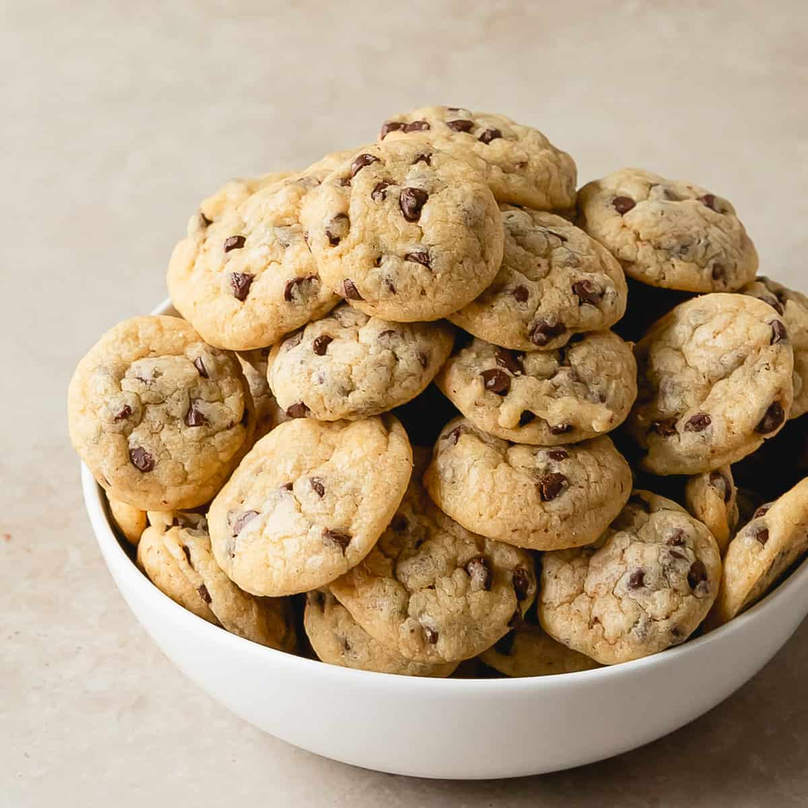
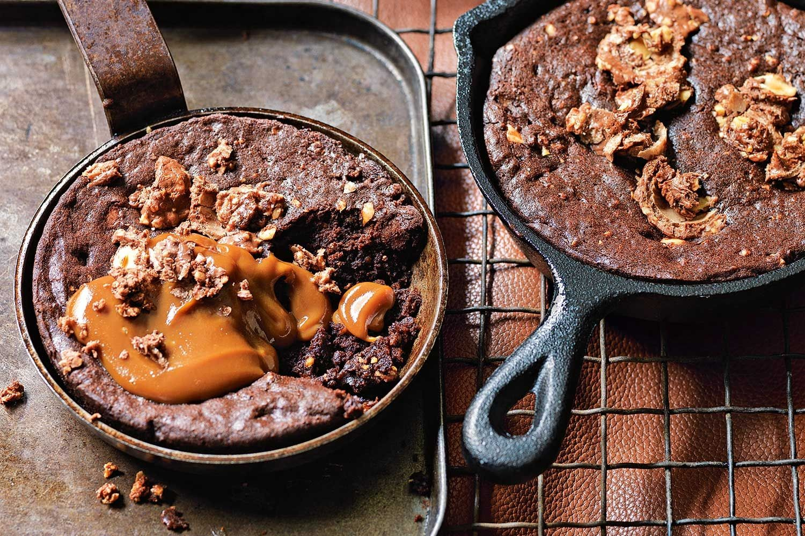

Our Top 3 Recipes!
Cielito Lindo Dip
Total Time 45 mins.
Makes 10 servings
Ingredients:
- 1 can 16 oz. refried
- 1 pkg. 8 oz. cream cheese
- 1 ½ cup guacamole
- 8 oz. grated cheddar cheese
- 1 pot 16 oz. mexican sauce
- ¼ cup cilantro
- 1 ripe tomato (chopped)
- 1 ½ cup finely chopped lettuce
Instructions:
-
In a large plate or mold place the ingredients in
layers.
-
Take the cream cheese out of the fridge 20 minutes
before preparing the Cielito Lindo. Spread the
refried beans on the bottom of the mold and then
top with the softened cream cheese. On the cream
cheese spread the guacamole. Add the lettuce and
tomato and pour over the pot of Mexican sauce and
chopped cilantro. Add the cheddar cheese and serve
at room temperature. You can also bake it at 350F
for 5-10 minutes or until the cheese melts.
-
Decorate the Cielito Lindo with cilantro and serve
it with nachos.
-
NOTE: You can serve in glasses or cups to
serve in small portions. You can add a layer of
pieces of ripe avocado. You could also make a
version by adding minced meat and serve warm.
Mini Chocolate Chip Cookies
Total Time 30 mins.
Makes 82 mini cookies

Ingredients:
- ¼ cup coconut oil in solid state (not melted)
- ½ cup brown sugar or coconut sugar
- ¼ cup caster sugar/superfine sugar *
- 1 large egg
- 1 teaspoon pure vanilla extract
- ¼ cup full fat natural Greek yogurt**
- 1 cup + 2 tablespoons plain or all purpose flour
- ¼ teaspoon salt
- ¼ teaspoon baking soda
-
1/3 cup mini chocolate chips (I used Enjoy Life), divided
Sea salt flakes
Instructions:
-
Using a hand mixer, beat together the oil and
sugars until combined. Add the egg and vanilla
and beat until light and fluffy. Mix in the yogurt
until combined.
-
Make a well in the centre of your wet mix; add the
flour, salt, and soda into the centre; mix the dry
ingredients together first to combine them before
mixing them through the wet ingredients. Mix until
just combined (do not over beat) and fold through
¼ cup of the chocolate chips. Refrigerate until
firm (minimum three hours or overnight if you can
is required for the batter, as it is stickier due
to the yogurt compared to normal cookie dough).
-
When you're ready to bake, preheat oven to 176ºC
| 350ºF.
-
Scoop and roll ½ teaspoon of cookie dough PER
COOKIE into balls and place onto a baking
tray/sheet lined with baking/parchment paper.
Press a few more chocolate chips over the tops
of each cookie with the remaining chocolate chips
(as many as you want), and bake for 8-10 minutes
or until cookies are nice and golden in colour.
Ferrero Rocher Skillet Brownie
Total Time 30 mins.
Makes 16 slices

Ingredients:
- 2/3 cup light butter
-
1/3 cup (55g | 2oz) dark/semi-sweet chocolate
chips/melts or squares
- 1 cup brown sugar, packed
- 2 large eggs
-
2/3 cup plain or all-purpose flour (or light spelt
flour works)
- ¼ cup unsweetened cocoa powder
- ¼ teaspoon salt
- 40 g | 1 ½oz hazelnut wafers, chopped thinly
- ¼ cup whole hazelnuts
- 1/3 cup nutella , melted
Additional for Topping:
- 2 tablespoons (extra) crushed hazelnuts
- 6 Ferrero Rochers , halved
Instructions:
-
Preheat oven to 175c | 350° F. Lightly grease a 9"
cast iron skillet (or pie dish) with butter/oil, wipe
over excess and set aside.
-
Combine the butter and chocolate in your cast iron
pan/skillet, and melt over low heat. Allow to cool
slightly and pour the mixture into a heat proof bowl.
Add the sugar and whisk until light and creamy. Add
the eggs - one at a time - whisking between each egg,
until combined.
-
Add the flour, cocoa powder and salt, mixing with a
wooden spoon until just combined. Fold in the crushed
hazelnuts; pour 1/2 the cookie dough into the prepared
pan.
-
Melt the nutella in the microwave for 30 seconds OR
in a heat-proof dish over a pot of boiling water
until it reaches a thinner consistency.
-
Pour the nutella over the cookie dough in the skillet
evenly to 1-inch of the edges. Sprinkle the wafers
and whole hazelnuts over the dough. Top with remaining
cookie dough, smoothing the layer with the back of a
metal spoon.
-
Bake in preheated oven for 25-30 minutes (for a gooey
cookie). Or for a set cookie, leave it in the oven
for 10 minutes longer. Cool for about 10 minutes.
Top with (optional) extra rushed hazelnuts and
Ferrero Rochers.